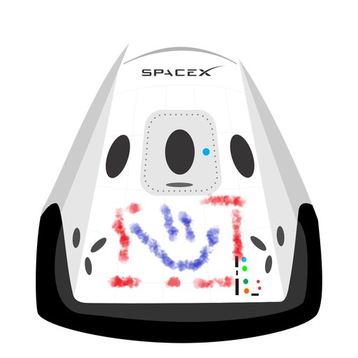

Hyperblog
Tu blog de confianza
Aquí inicia la historia de un gran proyecto
Y este es el parrafo de inicio donde vamos a explicar las cosas increibles que se pueden hacer con las ramas

Los blogs son la mejor forma de compartir informacion y tus ideas. Mucho mas que ir a conferencias o salir en Youtube.Excepto si eres un rockstar. Pero estadisticamente no lo eres.... por ahora.
Suscribete y dale like
Hola soy cr0xst y me encanto el curso de Git y GitHub de fredy